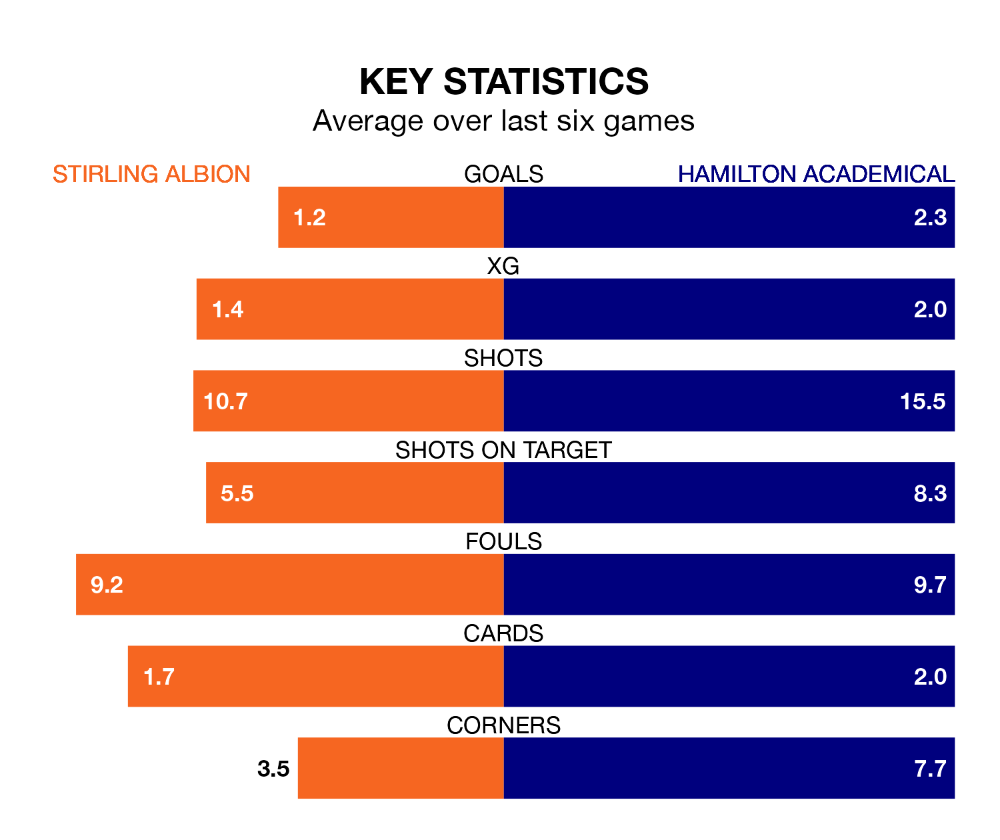

Stirling Albion host Hamilton Academical in Saturday's match at the Forthbank Stadium looking to bounce back from defeat last time out in League One.
The Binos, who sit eighth in the league after 19 games, fell to a 0-1 away defeat to Montrose on January 13.
They face a Hamilton Academical side who picked up a win in their last match, a 2-0 victory against Cove Rangers, and who sit second in the table.
With 16 goals in 19 games so far this season, Stirling are the league's lowest scorers with 0.8 goals per game. And they are conceding more than average, letting in 32 goals at a rate of 1.7 per game.
Hamilton Academical, meanwhile, are above average scorers, with 2.1 goals per game, compared to a league average of 1.5. They have conceded 0.7 goals per game.
With Ryan Fulton between the sticks, the Accies can rely on one of the league's safest pair of hands. He has kept six clean sheets in his 12 appearances this season, and only one other 'keeper – Falkirk's Sam Long – has been able to prevent the opposition scoring on more occasions in League One.
In Albion's net, Blair Currie has five clean sheets in 19 games. He has conceded a goal every 55 minutes, nearly three times as often as the 148 minutes between goals for Fulton.
The Binos are in mixed form in League One, with two wins and two draws from their last six games.
With three wins and two draws over that period, the away team's form is better – they have taken 11 points from 18, compared to the hosts' eight.
Over the last two years, Stirling and Hamilton Academical have played each other twice. Hamilton Academical won one of them and they drew the other.
Their last meeting was on November 11, when Hamilton Academical won 5-0 at home.
Saturday's match will be refereed by Peter Stuart, who has taken charge of seven League One games so far this season, issuing one red card and booking 29 players. He has not awarded any penalties.
The last Stirling game Stuart refereed was a 3-1 away loss to Cove Rangers on November 18. His last Hamilton Academical match was their 1-0 win at home against Montrose on August 26.
Updated: 10:02 (UTC), 19/01/24